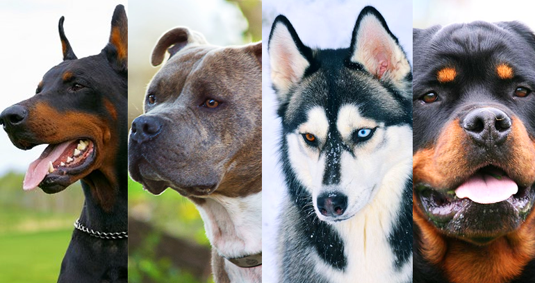
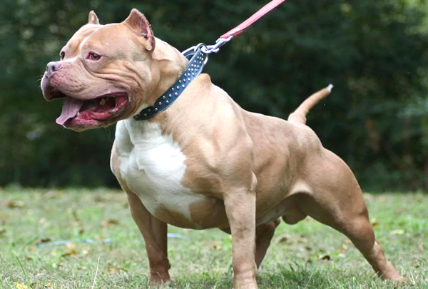
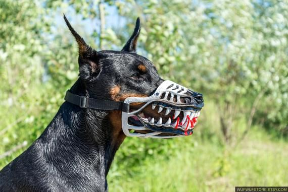
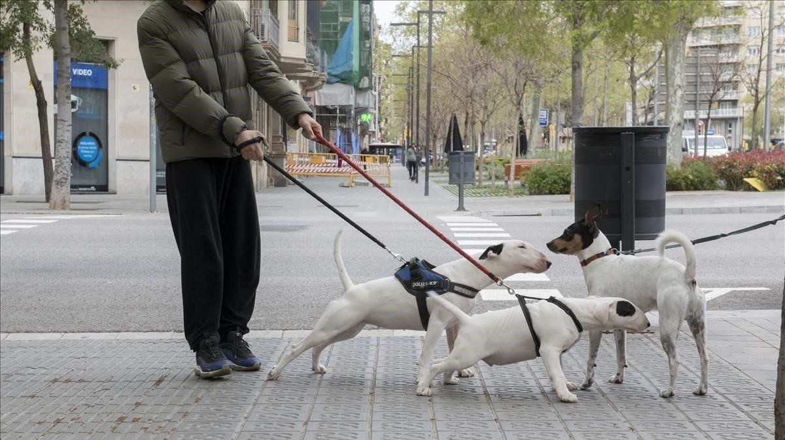

Razas peligrosas: Cuidados y Prevenciones

"Asesinos y Agresivos"
Asesinos y agresivos, así han sido considerados estos peludos, que han sido estigmatizados a lo largo de los años, resulta que esta no es su naturaleza, atacar a los humanos, pero por diversas circunstancias han impulsado que estos perros actúen de manera agresiva, pero de todas maneras para evitar problemas se han clasificado los perros en PPP (Perros potencialmente peligrosos), estos se clasifican en esta categoría, no por ser agresivos sino por su gran fuerza. Para evitar inconvenientes, hay unas medidas para estas razas peligrosas, a continuacion encontrarás las carácterísticas, los cuidados y las precauciones que se deben tener con un PPP. Igual debemos saber que un perro de cualquier otra raza puede ser peligroso, todo esto inflluye en su crianza. Ponte Cómodo y disfruta de este material.
Características de los Perros Potencialmente Peligrosos
- Un físico robusto, con una musculatura importante, resistente.
- El perro muestra un temperamento fuerte.
- El pelo es corto.
- Su tórax es amplio, es decir, tiene una gran capacidad pulmonar.
- El peso del animal es mayor de 20 kg.
- Su altura oscila entre los 50 o 70 centímetros.
- La mandíbula es grande.
- El animal, en conjunto, es ancho.
Cuidados y Prevenciones
"A la hora del paseo"
A la hora del paseo cometemos errores (sin querer) al transmitirle mensajes erróneos al perro. Estos miedos causan que nosotros, por ejemplo, demos tirones inadecuados a la correa por inseguridad que, a veces, el perro, puede entender como alertas o que algo va mal, activando en su cerebro una pequeña agresión hacia su entorno, y podemos provocar una situación incómoda.
Tenemos que tener en cuenta que, el vocabulario primario de comunicación con nuestros perros es el gestual (cosa que los dueños no suelen conocer) y, que cualquier movimiento de nuestro cuerpo, puede generar una información inadecuada de forma cognitiva en él. Siempre tendemos a hablar demasiado para comunicarnos y emplear el “chist” para todo, no creando la comunicación adecuada. Esto ocurre con todas las razas, pero lo más común es en perros muy grandes y de aspecto poderoso o, por lo contrario, en perros demasiado pequeños (yorquis, chihuahuas, etc.) provocando esos constantes ladridos característicos ya que, siempre que ladran, tendemos a calmar acariciando cuando, sin saberlo, estamos premiando esta conducta; pero ese es otro tema.
También, por su instinto primario de presa y caza, pueden dirigirse hacia cualquier cosa que esté en movimiento. En el cerebro de nuestro amigo, su función es atraparlo y morderlo para su posterior transporte. Y es fácil, que en un parque, haya alguna persona corriendo o en bicicleta. Por eso, es importante que aparte de su etapa de impregnación, reciban una educación adecuada y un adiestramiento básico. Porque un perro educado, no es un perro adiestrado, y viceversa.
Seguridad en lugares públicos
En lugares públicos será obligatorio que tu mascota lleve siempre collar, bozal y el permiso o documento de registro como perro potencialmente peligroso. De lo contrario puedes enfrentar multas de hasta 30 salarios mínimos legales diarios y aún más grave, la policía puede decomisar a tu mascota.
Propietarios y acompañantes
Los perros potencialmente peligrosos deben ir siempre acompañados por un mayor de edad. Menores de edad, personas con limitaciones físicas o incluso personas en estado en embriaguez no pueden ser las responsables de la mascota. En este caso es posible enfrentar multas de hasta 5 salarios mínimos y el decomiso de la mascota.
Pero... Realmente Sabes su tu Perro es Potencialmente Peligroso?
"A continuación, una lista con las razas que en Colombia hacen parte de las potencialmente peligrosas . . . "
- Pit Bull Terrier
- American Pit Bull Terrier
- Perro de presa Canario
- Rottweiler
- Mastin Napolitano
- Staffordshire Terrier
- American Staffordshire Terrier
- Dogo Argentino
- Bullmastiff
- Dogo de burdeos
- Fila Brasileiro
- Tosa Japones
- Doberman
Registro de Perros Potencialmente Peligrosos
Esta es una de las principales cosas que debes hacer al adquirir una mascota que está clasificada como potencialmente peligrosa. Según la ley, todas las mascotas clasificadas como potencialmente peligrosas deben ser registradas en el Censo de Perros Potencialmente Peligrosos.
Para realizar este registro, puedes hacerlo en las alcaldías locales con información general como el nombre y la raza de tu mascota, la información del propietario, lugar de residencia y la póliza de responsabilidad civil extracontractual. Conoce cómo realizar el registro de perros potencialmente peligrosos en Colombia aquí.
Póliza de responsabilidad civil Extracontractual
Se trata de un seguro para mascotas con la que podrás cubrir los gastos por daños a terceros. Si tu mascota le causa daño a otras personas o a sus bienes, le seguro te brindará respaldo económico y orientación jurídica antes la reclamación de un tercero.